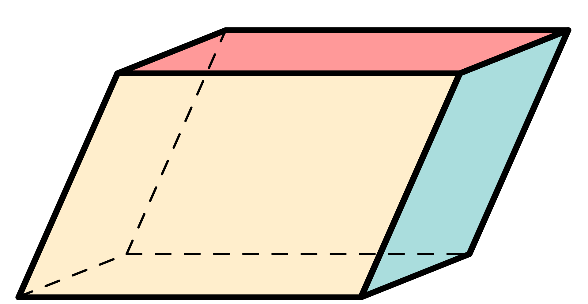
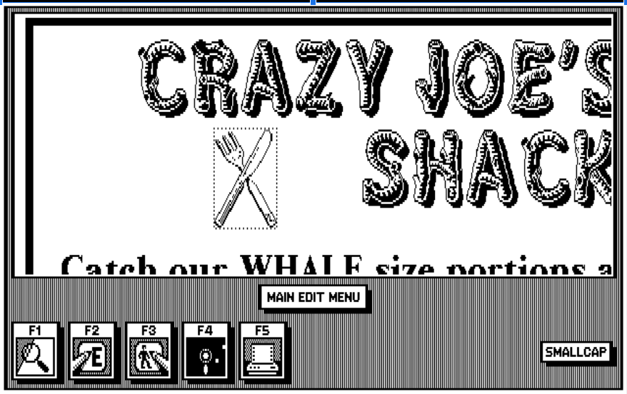
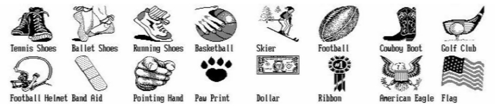
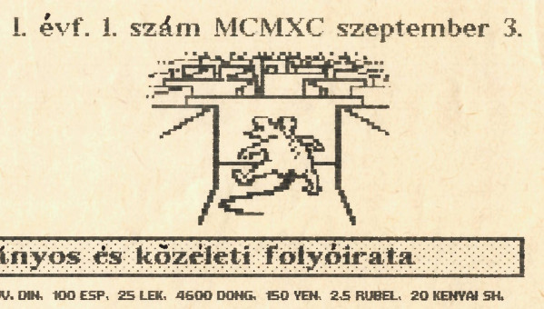
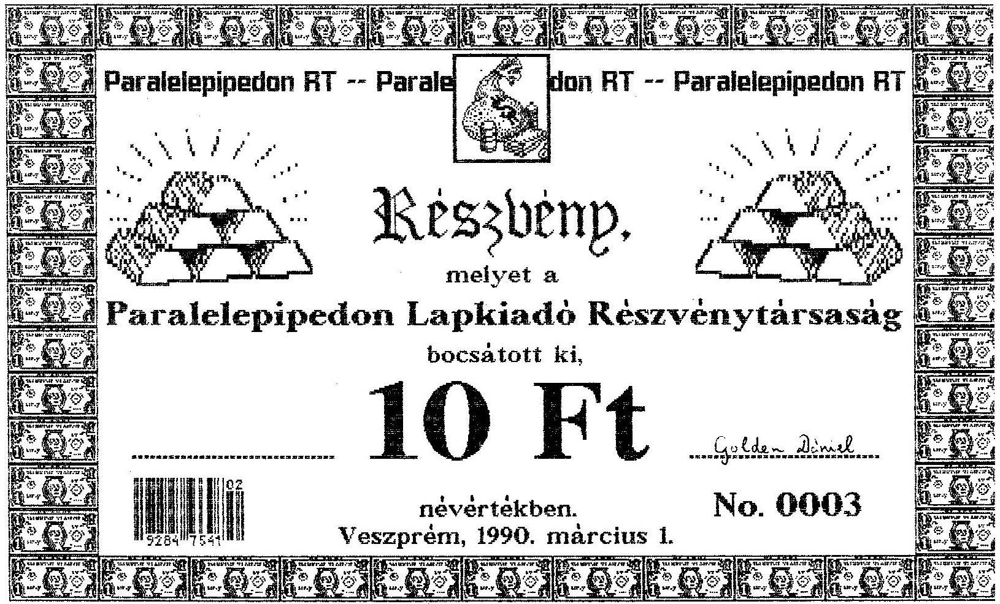

A méltán közkedvelt Pimpa és Tudomány mellett jóval kevesebben ismerik a Paralelepipedon Zrt-t. Ám míg a Pimpa és Tudomány sikere és népszerűsége megkérdőjelezhetetlen, a Paralelepipedon megítélése sokkal vegyesebb. Kezdettől fogva szeretett a háttérben maradni, és az sem javított a megítélésén, hogy fennállása során egyszer sem tett közzé részvényesi beszámolót, nem osztott meg semmit a terveiből, eredményeiből, nem hívta fel a részvényesek figyelmét az esetleges kockázatokra. A Pimpa és Tudomány jubileumi számában végre közzétesszük a kisrészvényesi nyomásra elkészült független elemzői beszámolót.
Paralelepipedon:
A paralelepipedon olyan hat lap által határolt térbeli geometriai alakzat, amelynek minden oldallapja paralelogramma. A név a görög παραλληλ-επίπεδον (párhuzamos síkok) kifejezésből ered. (forrás: Wikipédia)

A Paralelepipedon Zrt. (akkor még Rt.) 1990-ben alakult, a részvénykibocsátás 1990. március 1-jén történt. Hogy időben elhelyezhessük mindezt: Horn Gyula a Németh-kormány külügyminisztereként Moszkvában tárgyal Eduard Sevardnadzéval a szovjet csapatok kivonásáról, az első szabad parlamenti választás pedig csak pár héttel később, március 25-én történt. Történelmi idők voltak, minden hétre jutott legalább egy, korábban elképzelhetetlennek tartott esemény, a szocialista világrendszer pár hónap alatt darabjaira hullott. Ezen történelmi események farvizén, mintegy árnyékában próbáltak meg a Paralelepipedon magukat rendkívül dörzsöltnek gondoló alapítói gyorsan és nagyot akasztani.
Mentségükre felhozható, hogy a kor számos más szerencselovagjával ellentétben nem a becsődölt állami vállalatok hulláin sakálkodva próbáltak instant vagyont harácsolni, hanem a tőkefelhalmozás sokkal rögösebb, bár tulajdonképpen eredeti útját választották: vállalatot alapítottak, és megpróbálták saját terméküket a szabad piacon tisztes haszonnal értékesíteni. Ám ha közelebbről megnézzük a történetüket, nyilvánvalóvá válik, hogy mindössze a legsötétebb manchesteri kapitalizmus (vö. Friedrich Engels: A munkásosztály helyzete Angliában) receptjét próbálták meg a rendszerváltás környéki zavaros időkben alkalmazni, mint azóta kiderült: sikertelenül.
A munkásosztály helyzete Angliában:
Friedrich Engels 1842–1844 közötti angliai tartózkodása alatt szerzett tapasztalatai alapján írta meg a korabeli munkásosztály sanyarú helyzetét bemutató híres könyvét. Lenin méltatása szerint: „Ez a könyv borzalmas vádirat volt a kapitalizmus és a burzsoázia ellen. (…) És valóban, sem 1845 előtt, sem később nem jelent meg a munkásosztály nyomorának egyetlen ilyen élethű és pontos ábrázolása sem.”
Az ötlet megvolt, de mi volt a termék? Egy addig mindössze 4 számot megért, mérsékelt sikerű középiskolai lap, a Daily News a veszprémi Lovassy László Gimnázium II.A matek tagozatos osztályától. A szerzőgárda néhány lelkes gimnazista, akik kíváncsian próbálgatták az akkori kezdetleges asztali kiadványszerkesztő megoldásokat, nyitottak voltak a világra, humorosak voltak, és szinte minden érdekelte őket az irodalomtól a bakonyi túrázásig. Mai fogalmaink szerint a lap egy ígéretes startup volt, de a dúsgazdag, pénzt helikopterről szóró kockázati befektető és a kaliforniai álom helyett nekik csak a Paralelepipedon Rt. jutott. A konstrukció szerint a részvénytársaság átvette a kiadói feladatokat, intézte a terjesztést, szervezte a hirdetőket, és nagy újításként az újságot immár pénzért adta, míg a szerzők újságírói igazolványt kaptak,  és tiszteletdíjat kaphattak a cikkeikért, illetve kezdetleges előfizetői konstrukciót is kínáltak az olvasóknak. Röviden: piaci alapokra próbálták helyezni a lap működését.
és tiszteletdíjat kaphattak a cikkeikért, illetve kezdetleges előfizetői konstrukciót is kínáltak az olvasóknak. Röviden: piaci alapokra próbálták helyezni a lap működését.
Az eredeti Daily News mind a négy száma klasszikus, fél asztalnyi IBM PC XT-n készült NewsMaster 1.0 programmal, a nyomtatás pedig Epson FX-100+ mátrixnyomtatóval történt. Ez már tudott sima A4-es lapra is nyomtatni, nem csak perforált szélű leporelló papírra. Minden példány laponkénti egyedi nyomtatással készült, ráadásul az ékezeteket a NewsMaster nem kezelte, így ezeket kézzel-tollal kellett utólag pótolni. És hogy emlékszik a hálátlan utókor az akkor csodaszámba menő NewsMasterre?
„NewsMaster, from Unison World, is a primitive low-cost desktop publishing program aimed at home users and low end PCs. It supports both dot-matrix and laser printers.” (forrás)

Az induló tőkét elsődleges zártkörű részvénykibocsátással kívánták bevonni a piacról, az operatív működést pedig a folyamatos lapértékesítésekből finanszírozni. A tőzsdei bevezetés ötlete – szerencsére – nem merülhetett föl, mivel a Budapesti Értéktőzsde csak 1990 júliusában nyílt meg újra. Az egész sokkal inkább hasonlított egy analóg kézműves Kickstarter-kampányra, mintsem egy professzionális részvénykibocsátásra.

A nyomdából 1990. március 1-jei dátummal kikerülő értékpapírok ugyanazzal a technikával készültek, mint az újság, csak antik hatású, sárgásabb papírra. Érdemes itt egy pillanatra elidőzni a grafikai megvalósításnál. Az egészről süt a talmi gőg, a hübrisz és a nagyravágyás: csillogó aranyrudak, súlyos pénzeszsákok, dollárbankók keretjelleggel. Szokatlan visszafogottságot mutat, hogy az 1 dolláros bankjegyet tették rá, de ennek prózai oka van: csak ez volt a clipart készletben. Ám ezt a hiányosságot remekül kompenzálták a bankó ornamentikus megsokszorozásával.
A sorszámnak már az első kibocsátáskor 9999-ig volt hely, nem kispályában gondolkodtak a srácok Veszprémben. Csak becsléseink vannak, hány részvény került kibocsátásra, de biztos, hogy az elméleti 9999 darabnak csak a töredéke. Jó felső becslés lehet, hogy első körben a 35 fős osztály körében tervezték az értékesítést, fejenként max. 2 részvénnyel. Alsó becslésként használhatjuk, hogy 0006-nál magasabb sorszámú részvény nem került még elő. Mindent összevetve maximum 20 db-ra tehető az első körben kibocsátott részvények száma, amiből a bevétel legjobb esetben 200 Ft volt, de elképzelhető, hogy a menedzsment önmagát is javadalmazta néhány papírral, így még kevesebb a befolyt összeg.

A sikeres kibocsátást követően a menedzsment nagy médiafelhajtással megtámogatott pályázatot írt ki az újság nevének megváltoztatására, melynek sikeres levezénylése után a lap felvette az azóta legendássá vált Pimpa és Tudomány nevet, mely néven 1990 szeptemberében jelent meg az első szám. Ekkor szerepelt először az azóta szintén ikonikussá vált mouse in maze logó is.
A lap induló ára 8 Ft volt, ami a korabeli újságárakhoz képest drágának számított. Összehasonlításképpen a napi 16 oldalon megjelenő Népszabadság ekkor 6,50 Ft-be került, a Napló 4,30 Ft, míg a népszerű színes hetilap, a Nők Lapja 13,50 Ft volt. Nehéz a pontos összevetés, mert 1990–91-ben volt a forint – eddigi – legmagasabb inflációja: évi 29%, majd 35%, ám bizonyos termékköröknél ez 50-80% is lehetett (emlékezzünk: taxisblokád, illetve lapunk megjelenésekor talán már csak az „első taxisblokád”…), így az árak egy éven belül is nagymértékben emelkedhettek. A 8 Ft ma kb. 150 Ft-nak felel meg.
A forint mellett a lap több külföldi pénznemben is megvásárolható volt. Ezek közül a német márka, az osztrák schilling, az olasz líra, a spanyol peseta, a jugoszláv dínár, a szovjet rubel már nem léteznek, a P&T ezeket mind bravúrosan túlélte. A mongul tugrik, az albán lek, a vietnami dong, a kenyai shilling – bár igen komoly inflációtól sújtva – ma is forgalomban vannak. Egyértelmű, hogy ezekkel szemben is hosszú távon érdemesebb volt/lett volna P&T-t vásárolni. Az amerikai dollár és a japán jen viszont folyamatosan kirobbanó formában van, aki ezekből fizette a lapot, az bizony akár Quaestor-kötvényt is vehetett volna.
A kuvaiti dinár gyanús, nagyon gyanús. Itt ismét felsejlik a Paralelepipedont folyamatosan körüllengő iraki-kuvaiti-Szaddám Huszein-szál. Emlékeztetőül: Irak 1990. augusztus 2-án, alig egy hónappal a P&T megjelenése előtt szállta meg Kuvaitot. A lap második oldalán ott a cáfolatnak álcázott, ám tulajdonképpen nyílt beismerés: „Szaddám Husszein támogatja a Paralelepipedon Rt.-t ?!?” Majd a következő számban egész oldalas iraki tudósítás Szaddám Huszein arcképével… A kuvaiti dinár azóta is létezik, túlélt minden háborút.
Érdekességképpen a korabeli P&T árakat mai árfolyamon forintosítva a két szélsőérték: 285 mongol tugrik ma csak 35 forintot ér, 150 japán jen pedig több mint 430 forintot. Vajon ez véletlen lenne? Aligha. Mindkét nép távoli rokonunk.
A P&T 1992-es második száma több mint másfél évvel az első, kirobbanóan sikeres szám után jelent csak meg. Mi történt ez idő alatt? Lenyúlták a részvényesek pénzét, és távoztak Belize-re? A legoptimistább becslések szerint is a befolyt összeg maximum 20 részvény (20 x 10 Ft = 200 Ft) és 25 eladott újság (25 x 8 Ft = 200 Ft) ellenértéke lehetett, vagyis 400 Ft. Ez még a Cimbora sörkertben is csak 8 korsó sört ért akkoriban (ld. P&T, 1992. májusi szám, 10. oldal).
Ez a búcsúszám mind terjedelemben, mind színvonalban, mind megjelenésben messze a korábbi számok fölé emelkedett. Ez már Ventura Publisher programmal és HP lézernyomtató + fénymásoló vegyes technikával készült, ami lehetőséget adott egyedi képek kezdetleges beillesztésére. Az ára is 25 Ft-ra nőtt, de a korabeli vágtató infláció, a többszörös terjedelem és a magas előállítási költségek miatt ez indokolt is volt.
A választható fizető valuták közé bekerült a jemeni rial, ami egyértelműen annak tudható be, hogy Észak-Jemen jó hely. Az etióp birr viszont – elég nehezen megfejthető, de sikerült neki a bravúr – lelökte a mongol tugrikot a leghitványabb valuta dobogójáról: 2,5 birr mai árfolyamon mindössze 18,50 Ft-ot ér.
Az utolsó szám sikere elsöprő volt, de sajnos már későn jött. Ugyan benne volt a levegőben a folytatás, készültek is írások, de a szerkesztőség szétszéledt, mindenki mással kezdett foglalkozni. De most, harminc év múltán végre eljött az idő: elkészült a legújabb szám minden korábbinál nagyobb terjedelemben és magasabb színvonalon – a részvények kilőhetnek.
Erre való tekintettel független elemzői véleményem a menedzsment jelen lapszámban közzétett ajánlatára (ld. a 19. oldalon): a részvényt vételre javaslom azoknak, akiknek nincs, és tartásra, akiknek van. Ha valaki sajátos egyedi élethelyzete miatt mégis kénytelen megválni a papírtól, javaslom, próbálja meg sör helyett inkább japán jenben bonyolítani az ügyletet (587 Ft részvényenként), és mindenképpen utasítsa el az etióp birrben való elszámolást (7,40 Ft/részvény).
Szakértői vélemények
Bróker Mária, pénzügyi tanácsadó
A kilencvenes évek első felében minden komoly ügyfelemnek azt javasoltam, hogy kizárólag Paralelepipedonba fektessen. Aki jókor fogadta meg a jó tanácsot, ma már egy exkluzív tengerparton süttetheti a hasát.
Kis Péter, a BudaCash Brókerház Zrt. vezető elemzője
Azt gondolom, hogy egy igazán kiegyensúlyozott portfóliónak ma is nélkülözhetetlen elemét alkotják a Paralelepipedon részvények. Rövidtávon talán kevésbé tűnik vonzónak, de hosszútávon mindenképpen megszolgálja a bizalmat.
Nagy Pál, a QUAESTOR Értékpapírkereskedelmi és Befektetési Zrt. vezető elemzője
Az utóbbi évek csalódást keltő bluechipjei közül kiragyogott a Paralelepipedon gyöngyszeme, amely a legnehezebb időkben is tudott meglepetést okozni. Csak a legbátrabbak mertek rá fogadni, de nekik nagyon megérte.

K-né, kisbefektető Mi itt Debrecenben tiszta szívből és mélyen bíztunk benne, hogy az olyan magyar papírokba vetett töretlen hitünk, mint amilyen a Paralelepipedon, végül minden becsületes magyar ember számára elhozza a feltámadást. És akkor majd természetesen tudni fogjuk, kinek tartozunk ezért is hálával! (A fiam néha elfelejti a vagyonnyilatkozatába beírni, de hát az vesse rá az első követ, aki nem szokott ilyen apróságokban tévedni.)
Tóth Antal, bennfentes kereskedő
Pararészvény? No para – aki okos, egy életre elteszi!